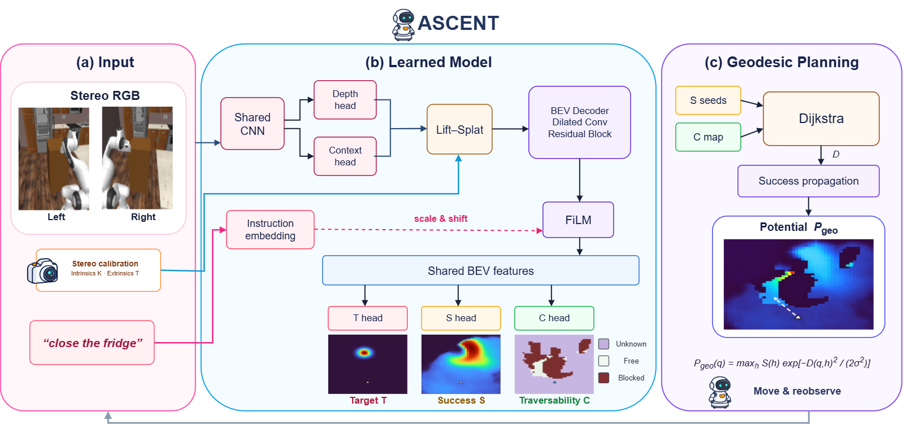

01
Close Fridge
3×
Success
3×
Fail
3×
Fail
Preprint
Reaching an object’s vicinity does not ensure that a mobile robot is ready to manipulate it. The arrival pose may provide an unsuitable viewpoint, leave an obstacle along the approach, or fall outside the starting conditions of a frozen manipulation policy. We present ASCENT, a rollout-grounded framework for closed-loop repositioning and handoff between navigation and manipulation. A supervised stereo-language model predicts target location, immediate policy-success, and visibility-aware traversability in a local bird’s-eye view. Geodesic propagation combines predicted handoff success with path cost to guide short base motions, while a learned gate determines when to invoke the unchanged manipulation policy. This separates where the policy can succeed from how the base can reach a favorable stance, without reinforcement-learning updates. Across five articulated-object closing tasks and six fully visible, obstacle-free starting distances, task-macro success is 58.4%, compared with 37.9% for N2M and 19.8% for direct frozen-policy execution. Additional CloseFridge tests examine partial visibility and randomized obstacles, and matched evaluations show benefits with four frozen policies. The results support a modular interface that connects empirical manipulation competence to explicit geometric planning.
From two onboard RGB views and the instruction, a stereo-language model predicts three bird’s-eye-view fields around the robot: where the target is (T), where the frozen manipulation policy would succeed if it took over from that stance (S), and where the base can drive (C). Geodesic planning spreads the predicted success over the traversable map, discounting each stance by its path cost, into a potential Pgeo. The base takes a short step up this potential and looks again; a learned gate decides when the current stance is good enough to hand off to the unchanged policy.

Five articulated-object closing tasks. In every example, ASCENT, N2M and π0.5 only start from the same pose in the same randomized kitchen, and all three use the same frozen π0.5 checkpoint for manipulation — they differ only in where the base is when it starts.
Run straight from where the robot stands, π0.5 often misjudges distance: it starts reaching before it is close enough and comes up short. From an unfamiliar viewpoint it can also fail to pick out the appliance and drive off somewhere else. The same weaknesses sink N2M whenever its predicted stance is not a good one.